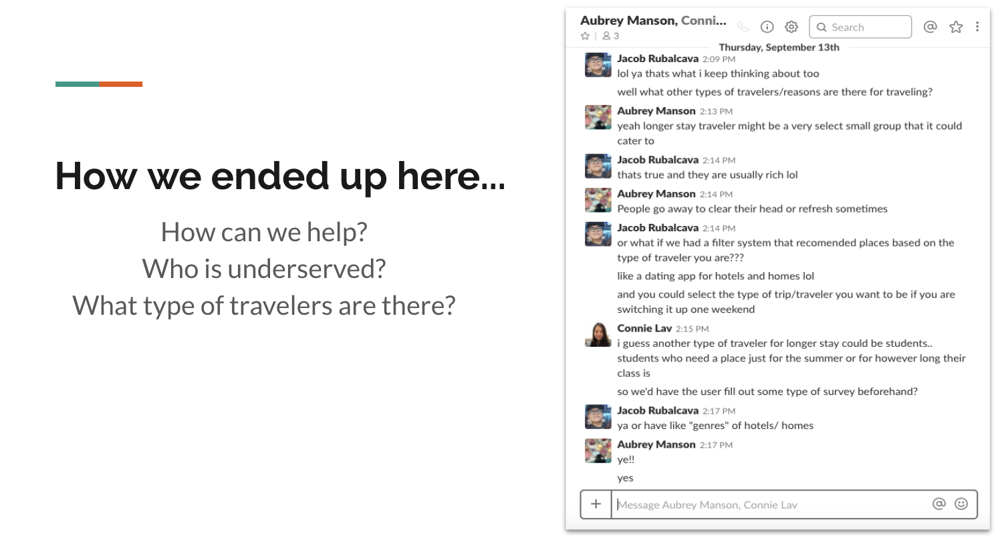
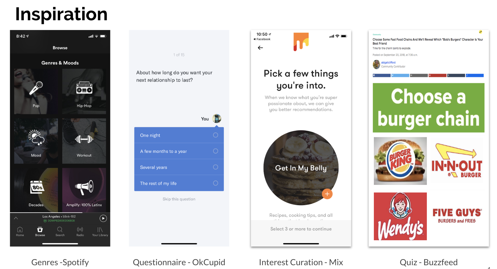
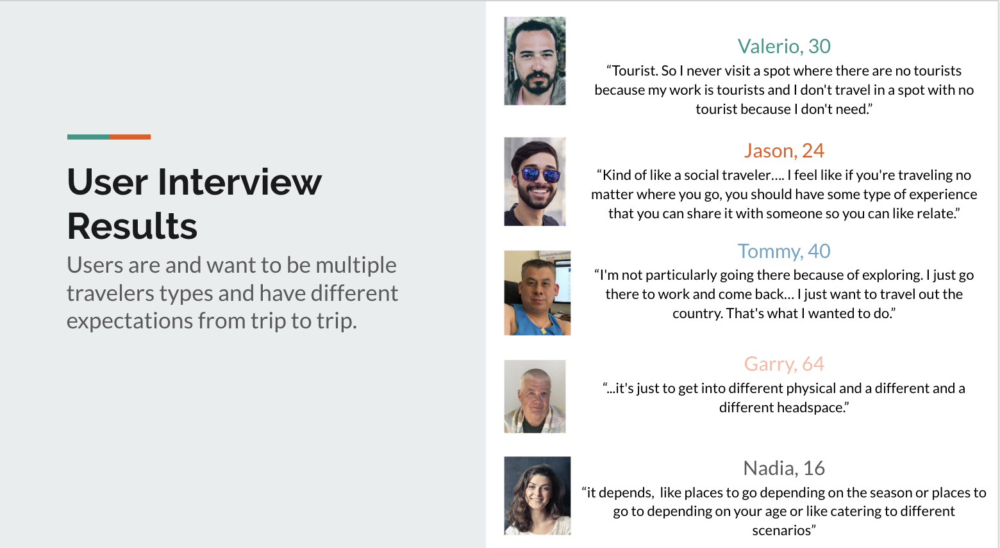
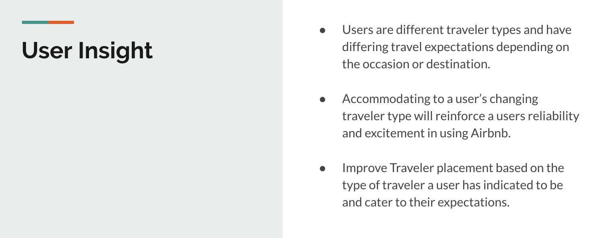

You may or may not know what kind of traveler you are, but Airbnb’s new feature ‘Traveler’ will curate your stay and experience based on a selected traveler type. If you don’t know what type of traveler you are, you can always take the feature’s quiz to find out! If you want to try a different traveler type out, it’s as easy as switching out the traveler type filter to regenerate your recommendations. Hopefully this feature will remove most of the hassle from making travel plans.
 We took inspiration from several apps, Spotify with its Genre selection, Mix --curated based on your interests, as well Buzzfeed and OkCupid for their surveys to help consolidate your type. We wanted to incorporate the more entertaining aspects between these existing apps with the practical nature to curating either based on interest selection or a survey to help.
We interviewed a diverse demographic, from a 16 year old girl to a 64 yr old man, to see how travel differs for each of them. We concluded that, yes, each had a very different idea of what travel means to them and what kind of activities they want to do when they travel, which makes sense. This was mainly based on their interests and their expectations could change from trip to trip.
We have observed that users need a reliable method of planning trips based on their reason for traveling, so that their ideal experience is achieved. How might we improve a traveler’s compatibility with their accommodations, their location, and activities.
Develop a listing locator feature centered around the the traveler and why they are traveling, called Airbnb Traveler, to help users of all traveler types solve the pains of booking a rental in a location compatible with their traveler type.
We will make it convenient for users to achieve their ideal travel experience by placing them in a location compatible with their reason for traveling. The Traveler types will be presented to the user in a genre selection style commonly seen on music and video streaming apps. Incorporate Airbnb’s quiz to help users identify and explore traveler types. Travelers will be able to explore different traveler types without the pressure of travel research or the uncertainty of authenticity. We treat every type of traveler equally and will present accommodations based off of what a user has indicated what their traveler type to be, in locations they want to be in.
Multiple type selection High Fidelity Images Save and Compare Feature Host classification of listings User Ratings Survey Length